Prototypes
Les cinq pages du site, refaites avec toutes les recos retenues, à côté des pages actuelles. Ce sont de vraies pages : mêmes HTML, mêmes images, mêmes textes, même CSS, plus une feuille qui corrige. Tous les états se manipulent : survol, focus au clavier, onglets, questions dépliables, message.
Comparateuravant et après côte à côte, 5 pages, 375 / 768 / 1440 px, clair et sombre (option), défilement lié
Étatschaque composant dans chacun de ses états, avant et après
apres.csstoutes les corrections, rangées par problème (P1…P23)
Comment ils sont faits
- Avant : les cinq
index.htmldu dépôt du site au commit953f6d3, avecstyle.csscopié tel quel (prototypes/css/site-953f6d3.css). Les images viennent du site en ligne. Le formulaire n’envoie rien. - Après : les mêmes pages, transformées par
donnees/scripts/prototypes.py(repère<main>, typographie française, chemins de menu, extraits recadrés, carte iPhone, Confidentialité en masses…), etapres.csschargé après le CSS du site. Les extraits recadrés sont dansprototypes/img/. - Sombre : une option (P23), qui va contre un choix tranché ; activée seulement par
?theme=sombre. Le site actuel n’a pas de sombre : dans le comparateur, seul l’après change. - Mesuré : les scripts de mesure ont tourné sur l’après ; résultats dans Mesures.
Avant et après, image par image
Les mêmes cadrages, pris sur les deux prototypes à l’échelle 2, affichés ici à leur taille CSS.
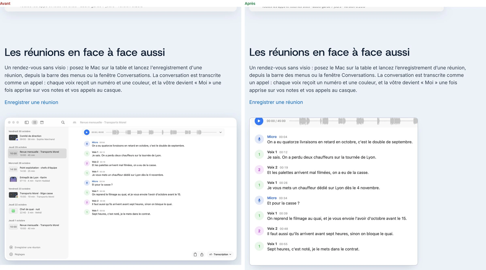
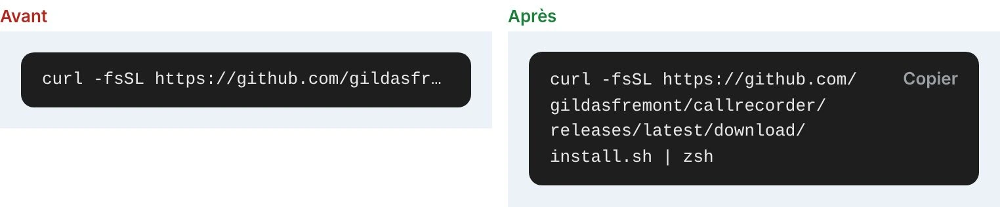
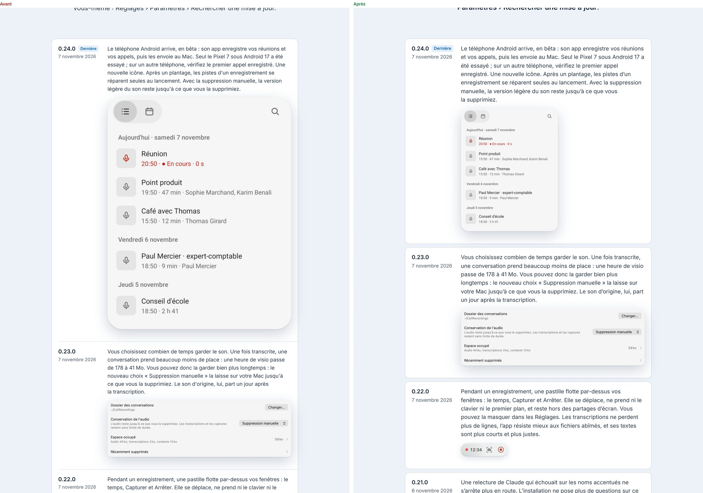
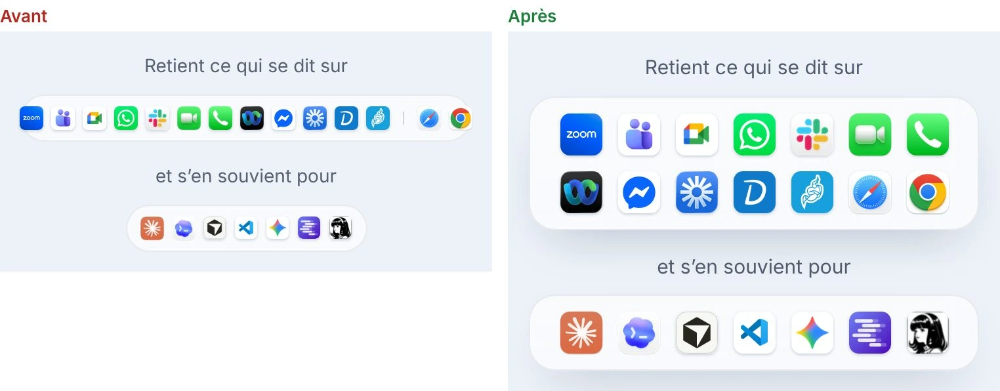
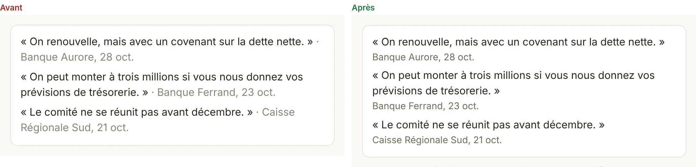
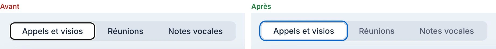
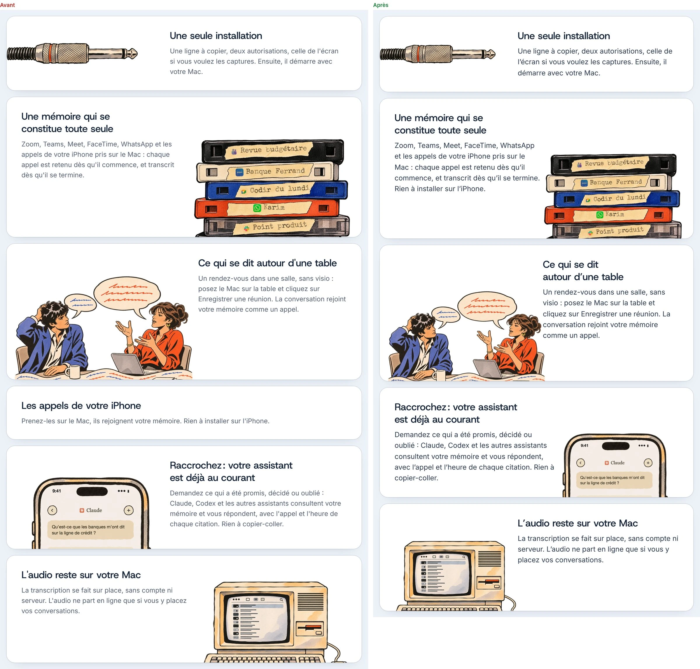
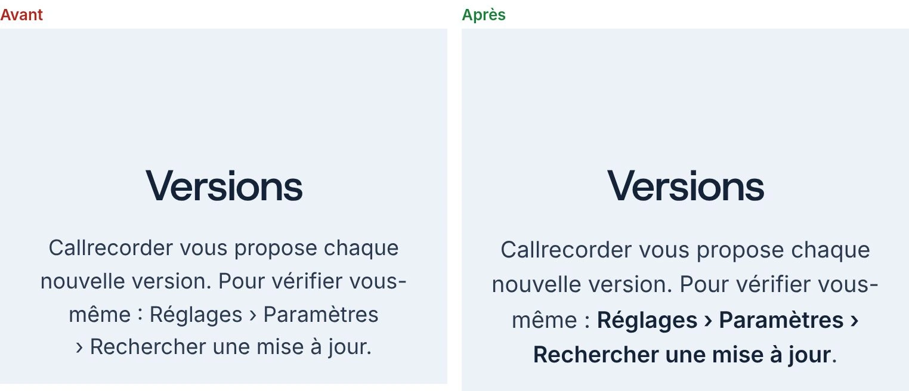
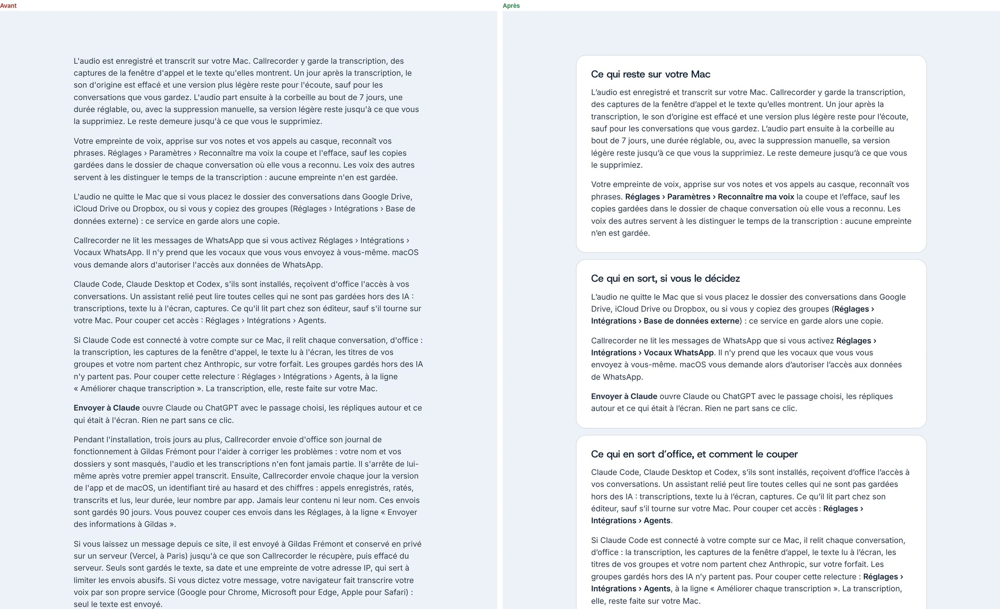
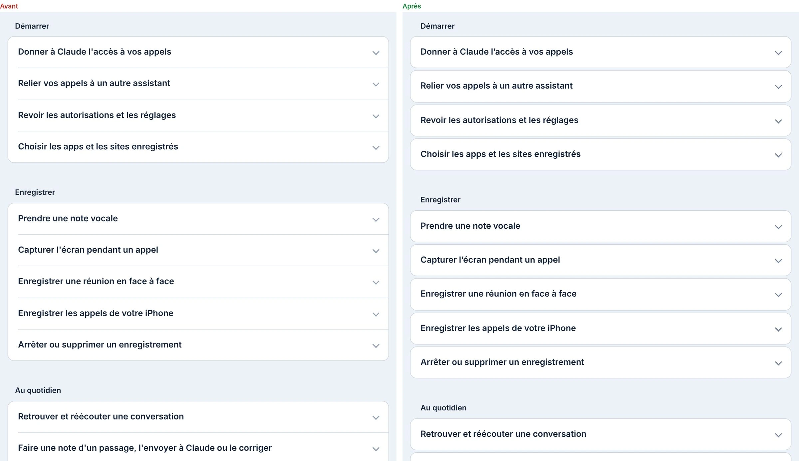
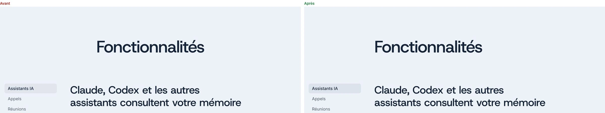
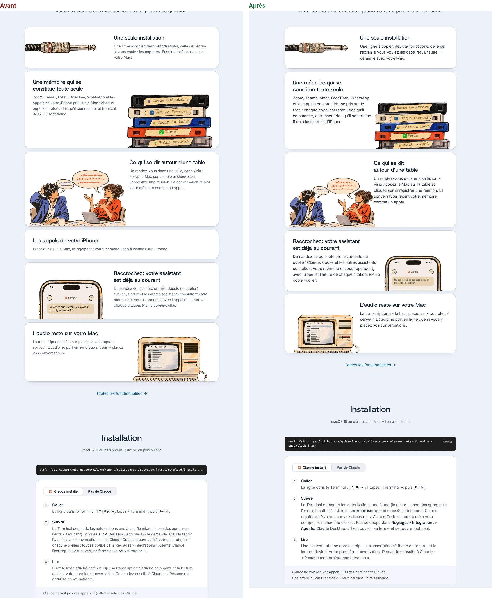
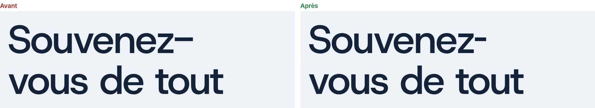
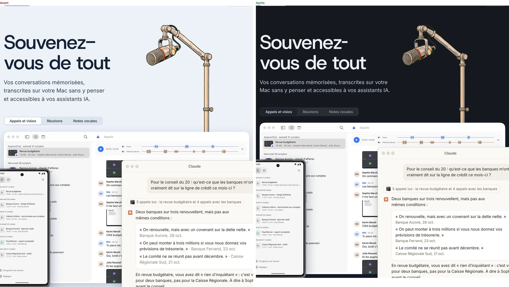
Relevé du 8 novembre 2026 sur le site en ligne (gildasfremont/callrecorder, commit 953f6d3). Données brutes dans donnees/, scripts dans donnees/scripts/.